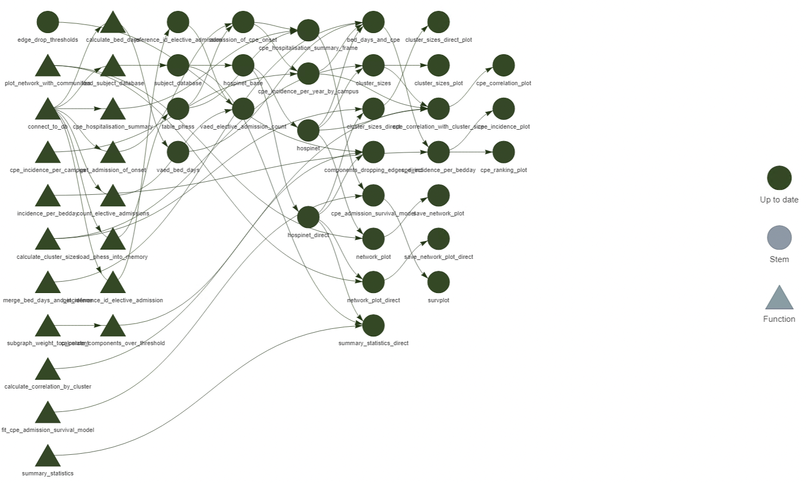

Chapter 4 Targets, the make-like pipeline
The project structure we discussed in Chapter 2 works fine for our reasonably straightforward projects that don’t have too many moving parts.
Often, our analyses will take a long time to run (I’m looking at you Stan) or are stochastic (again, Stan), and so we don’t want to re-run them every time we run our pipeline script. But, we need to make sure everything is up to date if we change something.
For example, I’ve plotted my model fit, but mislabelled my axes. I want to re-run the plot but not every step of my analysis. How can I make sure everything is up to date?
4.1 Enter targets
Targets borrows it’s workflow pattern from very old tools like Make, to only
run the parts of an analysis that actually need updating.
It uses dynamic programming to look at the set of outputs (known as “targets”) and determine if they are outdated, and thus only runs the part of the analysis that needs to be re-run.
First, let’s install targets:
install.packages("targets")
install.packages("visNetwork")
library(targets)Annoyingly, targets relies on igraph to do a lot of it’s graph-related work
both to visualise the pipeline and work out what is connected to what. igraph
is a very large, very heavy package so give it a few minutes to install. We also
install visNetwork as that will give us some pretty visualisations shortly.
Every targets workflow needs a special _targets.R file. We can create that
by running:
targets::use_targets()
targets::tar_edit()and actually, we can use that second command to edit the this file from anywhere, so it can be useful to bind it to a key.
4.2 Targets script file
After creating, your _targets.R file will look something like this:
# Created by use_targets().
# Follow the comments below to fill in this target script.
# Then follow the manual to check and run the pipeline:
# https://books.ropensci.org/targets/walkthrough.html#inspect-the-pipeline # nolint
# Load packages required to define the pipeline:
library(targets)
# library(tarchetypes) # Load other packages as needed. # nolint
# Set target options:
tar_option_set(
packages = c("tibble"), # packages that your targets need to run
format = "rds" # default storage format
# Set other options as needed.
)
# tar_make_clustermq() configuration (okay to leave alone):
options(clustermq.scheduler = "multicore")
# tar_make_future() configuration (okay to leave alone):
# Install packages {{future}}, {{future.callr}}, and {{future.batchtools}} to allow use_targets() to configure tar_make_future() options.
# Load the R scripts with your custom functions:
for (file in list.files("R", full.names = TRUE)) source(file)
# source("other_functions.R") # Source other scripts as needed. # nolint
# Replace the target list below with your own:
list(
tar_target(
name = data,
command = tibble(x = rnorm(100), y = rnorm(100))
# format = "feather" # efficient storage of large data frames # nolint
),
tar_target(
name = model,
command = coefficients(lm(y ~ x, data = data))
)
)There’s a bit going on here. The first point of difference from a typical
workflow is that instead of loading packages with library, we set them inside
tar_option_set.
This is because targets runs in a fresh R session (not your current one!) and
will load those packages into each session separately.
The next few lines are focussed on running targets in parallel - helpful but
outside the scope for today.
Then, there is a one-liner that will source all the files in your “R” subdirectory.
Finally, there’s a list of targets, and this is the juicy part…
4.3 Defining a target
All targets must start with a call to tar_target(). This function takes two
arguments:
- A name for the target (call it whatever you like, but make it memorable)
- A command to run. This can be any valid R expression, but the
targetsauthors suggest following functional programming. More on this a bit later.
The example file has two targets. One generates some data, and the second fits a linear model to said data.
We can see how this works by calling:
tar_visnetwork()We can see our 2 functions, and the object file, which is produced by the code
which will source our R files. The graph shows us that data feeds into the
model.
4.4 Running a pipeline
Running the targets pipeline is straightforward3
tar_make()## • start target data
## • built target data
## • start target model
## • built target model
## • end pipeline: 0.045 secondsThere’s a bit of output telling you what gets built and what gets skipped. The first time you run a pipeline, everything will have to be made, but from then on, only the outdated bits will be run:
tar_make()## ✓ skip target data
## ✓ skip target model
## ✓ skip pipeline: 0.031 seconds4.5 Working with a target
Once your targets are built, you might want to do something with them. For
interactive programming (which includes markdown), we can load the target into
our current environment using tar_load(). For example,
tar_load(model)
model## (Intercept) x
## 0.01023539 0.09225038We can also just print the current value (useful for plots) with tar_read().
Note that you only need to tar_load or tar_read outside of the targets
workflow. If you’re writing a function to use an input, do not use these
functions, just use the input argument as you normally would, and pass in the
name of the target inside the _targets.R file. For example, if we wanted a
function that worked with our coefficients we would write:
transform_slope <- function(coefficients, multiplier) {
coefficients[2] * multiplier # Note the lack of tar_load() here!
}and then add the following to the end of the _targets.R file:
tar_target(
transformed_slope,
transform_slope(model, 3)
)4.6 Function-oriented programming
Technically speaking, tar_target will accept any valid R expression.
Theoretically, this means we never need to write another R function ever again!
But, if we do that, we’ll quickly find our _targets.R file will be incredibly
long. Consider this example from the targets manual:
library(targets)
source("R/functions.R")
tar_option_set(packages = c("tibble", "readr", "dplyr", "ggplot2"))
list(
tar_target(file, "data.csv", format = "file"),
tar_target(
data,
read_csv(file, col_types = cols()) %>%
filter(!is.na(Ozone))
),
tar_target(
model,
lm(Ozone ~ Temp, data) %>%
coefficients()
),
tar_target(
plot,
ggplot(data) +
geom_point(aes(x = Temp, y = Ozone)) +
geom_abline(intercept = model[1], slope = model[2]) +
theme_gray(24)
)
)With only three, relatively simple targets, this file is already 18 lines long. If we instead write each of these targets as their own functions, we can reduce this file to
library(targets)
source("R/functions.R")
tar_option_set(packages = c("tibble", "readr", "dplyr", "ggplot2"))
list(
tar_target(file, "data.csv", format = "file"),
tar_target(data, get_data(file)),
tar_target(model, fit_model(data)),
tar_target(plot, plot_model(model, data))
)Much cleaner.
This makes us write a function for every step in our process, which makes
long-term maintenance of code a lot easier. It might seem cludgy at first (it
was to me), but over time it has led my code to be cleaner and easier to adjust
going forward. I also recommend the rather nice fnmate package (only available
on GitHub) to make writing functions easier as it will auto-generate the
skeletons for you.
4.7 targets helps you manage complicated workflows
Here is a more complicated workflow from one of my projects:

You can see how if I update a function somewhere in the middle, it’s not immediately obvious to me what needs to be updated and when, yet targets will handle all of this for me. Truly one of my favourite packages.
4.8 Extra reading
The user manual for targets is quite
good.
tarchetypes is another good package that makes targets a bit
nicer to work with.
one shouldn’t call
tar_make()inside an Rmd document, as it will get called every time you knit, which isn’t really ideal.↩︎